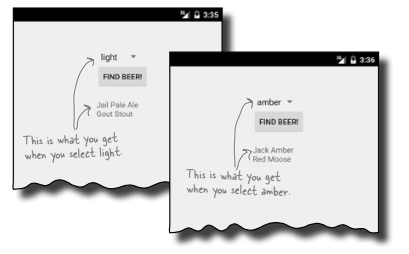
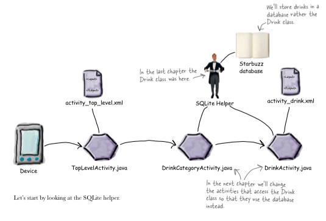
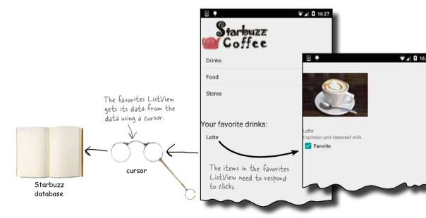
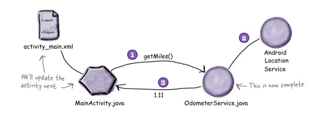
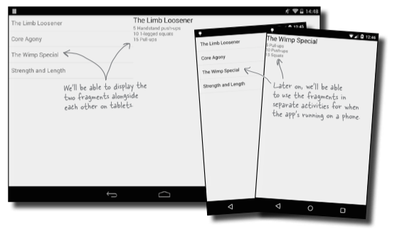
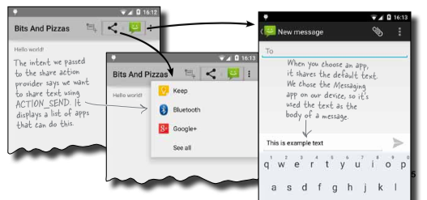

Head First Android Development
1 Get the source code
On this page you can find extra information and source code for the book Head First Android Development.
You can download the source code in zip or tar.gz format. Or, if you have git installed, you can get your own copy of the source code repository by typing this on the command line:
$ git clone https://github.com/dogriffiths/HeadFirstAndroid.git $ cd HeadFirstAndroid $ ls
2 Table of contents
These are the chapters and appendices in the book.
2.1 Chapter 1: Getting started
Android has been taking the world by storm. Everybody wants a smart phone or tablet, and Android devices are hugely popular. In this book we’ll teach you how to develop your own apps, and we’ll start by getting you to build a basic app and run it on an Android Virtual Device. Along the way you’ll meet some of the basic components of all Android apps such as activities and layouts. All you need is a little Java know-how…
Apps you'll build: MyFirstApp
2.2 Chapter 2: Building Interactive Apps
Most apps need to respond to the user in some way. And in this chapter you’ll see how you can make your apps a bit more interactive. You’ll see how you can get your app to do something in response to what the user does, and how to get your activity and layout talking to each other like best buddies. And along the way we’ll take you a bit deeper into how Android actually works by introducing you to R, the hidden gem that glues everything together.
Apps you'll build: BeerAdviser

2.3 Chapter 3: Multiple activities and intents
Most apps need more than one activity. So far we’ve just looked at single-activity apps, which is fine for simple apps. But when things get more complicated, just having the one activity won’t cut it. We’re going to show you how to build apps with multiple activities, and how you can get your apps talking to each other using intents. We’ll also look at how you can use intents to go beyond the boundaries of your app and make activities in other apps on your device perform actions. Things just got a whole lot more powerful…
Apps you'll build: Messenger
2.4 Chapter 4: The activity lifecycle
Activities form the foundation of every Android app. So far you’ve seen how to create activities, and made one activity start another using an intent. But what’s really going on beneath the hood? In this chapter we’re going to dig a little deeper into the activity lifecycle. What happens when an activity is created and destroyed? Which methods get called when an activity is made visible and appears in the foreground, and which get called when the activity loses the focus and is hidden? And how do you save and restore your activity’s state?
2.5 Chapter 5: The user interface
Let’s face it, you need to know how to create great layouts. If you’re building apps you want people to use, you need to make sure they look just the way you want. So far we’ve only scratched the surface when it comes to creating layouts, so it’s time to look a little deeper. We’ll introduce you to more types of layout you can use, and we’ll also take you on a tour of the main GUI components and how you use them. By the end of the chapter you’ll see that even though they all look a little different, all layouts and GUI components have more in common than you might think.

2.6 Chapter 6: List views and adapters
Want to know how to best structure your Android app? You’ve learned some of the basic pieces that are user to build apps, and now it’s time to get organized. In this chapter we’ll show you how you can take a bunch of ideas and structure them to build an awesome app. We’ll show you how lists of data can form the core part of your app design, and how linking them together can create a powerful and easy-to-use app. Along the way, you get your first glimpse of using event listeners and adapters to make your app more dynamic.
2.7 Chapter 7: SQLite databases
If you’re recording high scores or saving tweets, your app will need to store data. And on Android you usually keep your data safe inside a SQLite database. In this chapter, we’ll show you how to create a database, add tables to it, and prepopulate it with data, all with the help of the friendly SQLite helper. You’ll then see how you can cleanly roll out upgrades to your database structure, and how to downgrade it if you need pull any changes.

2.8 Chapter 8: Cursors and AsyncTasks
So how do you connect your app to a SQLite database? So far you’ve seen how to create a SQLite database using a SQLite helper. The next step is to get your activities to access it. In this chapter you’ll find out how to use cursors to get data from the database, how to navigate through cursors and how to get data from them. You’ll then find out how to use cursor adapters to connect them to list views. Finally, you’ll see how writing efficient multi-threaded code with AsyncTasks will keep your app speedy.

2.9 Chapter 9: Services
There are some operations you want to keep on running irrespective of which app has the focus. As an example, If you start playing a music file in a music app, you probably expect it to keep on playing when you switch to another app. In this chapter you’ll see how to use Services to deal with situations just like this. Along the way you’ll see how use some of Android’s built-in services. You’ll see how to to keep your users informed with the notification service, and how the location service can tell you where you’re located.

2.10 Chapter 10: Fragments
You’ve seen how to create apps that work in the same way irrespective of the device they’re running on. But what if you want your app to look and behave differently depending on whether it’s running on a phone or a tablet? In this chapter we’ll show you how to make your app choose the most appropriate layout for the device screen size. We’ll also introduce you to fragments, a way of creating modular code components that can be reused by different activities.

2.11 Chapter 11: Nested fragments
You’ve seen how using fragments in activities allow you to reuse code and make your apps more flexible. In this chapter we’re going to show you how to nest one fragment inside another. You’ll see how to use the child fragment manager to tame unruly fragment transactions. And along the way you’ll see why knowing the differences between activities and fragments is so important.

2.12 Chapter 12: Action Bars
Everybody likes a shortcut. And in this chapter you’ll see how to add shortcuts to your apps using action bars. We’ll show you how to start other activities by adding action items to your action bar, how to share content with other apps using the share action provider, and how to navigate up your app’s hierarchy by implementing the action bar’s Up button. Along the way you’ll see how to give your app a consistant look and feel using themes, and introduce you to the Android support library package.

2.13 Chapter 13: Navigation Drawers
Apps are so much better when they’re easy to navigate. In this chapter we’re going to introduce you to the navigation drawer, a slide-out panel that appears when you swipe your finger or click an icon on the action bar. We’ll show you how to use it to display a list of links that take you to all the major hubs of your app. You’ll also see how switching fragments makes those hubs easy to get to and fast to display.
2.14 Chapter 14: Material Design
With API level 21, Google introduced Material Design. In this chapter we’ll look at what Material Design is, and how to make your apps fit in with it. We’ll start by introducing you to card views you can reuse across your app for a consistent look and feel. Then we’ll introduce you to the recycler view, the list view’s flexible friend. Along the way you’ll see how to create your own adapters, and how to completely change the look of a recycler view with just two lines of code.
2.15 Appendix 1: ART–The Android Runtime
Android apps need to run on devices with low powered processors and very little memory. Java apps can take up a lot of memory and because they run inside their own Java Virtual Machine (JVM), Java apps can take a long time to start when they’re running on low- powered machines. Android deals with this by not using the JVM for its apps. Instead it uses a very different virtual machine called the Android Runtime (ART). In this appendix we’ll look at how ART gets your Java apps to run well on a small, low-powered device.
2.16 Appendix 2: ADB–The Android Debug Bridge
In this book we’ve focused on using an IDE for all your Android needs. But there are times when using a command tool can be plain useful, like those times when Android Studio can’t see your Android device but you just know it’s there. In this chapter we’ll introduce you to the Android Debug Bridge (or adb), a command line tool you can use to communicate with the emulator or Android devices.
2.17 Appendix 3: The Android Emulator
Ever felt like you were spending all your time waiting for the emulator? There’s no doubt that using the Android emulator is useful. It allows you to see how your app will run on devices other than the physical ones you have access to. But at times it can feel a little… sluggish. In this appendix we’re going to explain why the emulator can seem slow, Even better, we’ll give you a few tips we’ve learned for speeding it up.
2.18 Appendix 4: Top Ten Things (We Didn't Cover)
Even after all that, there’s still a little more. There are just a few more things we think you need to know. We wouldn’t feel right about ignoring them, and we really wanted to give you a book you’d be able to lift without extensive training at the local gym. Before you put down the book, read through these tidbits.